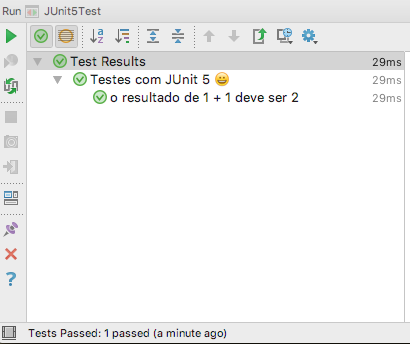
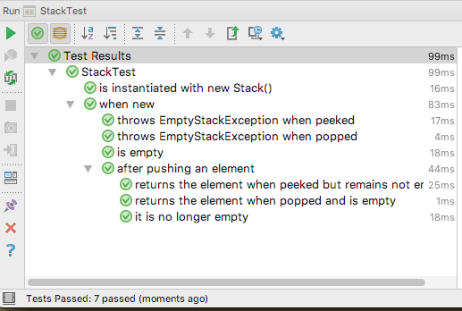
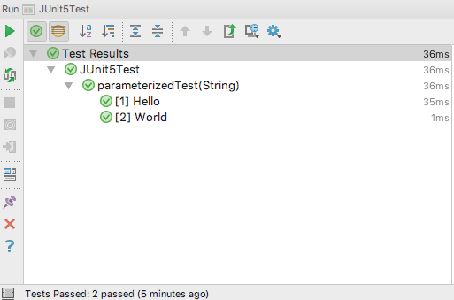
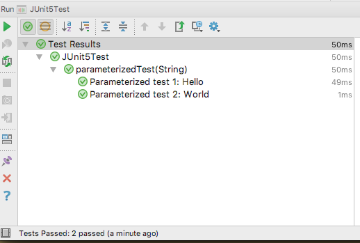
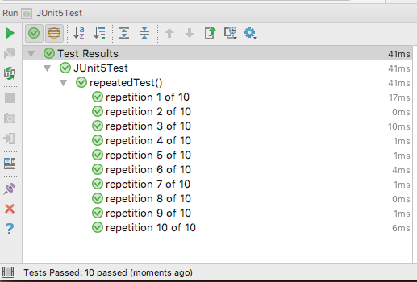
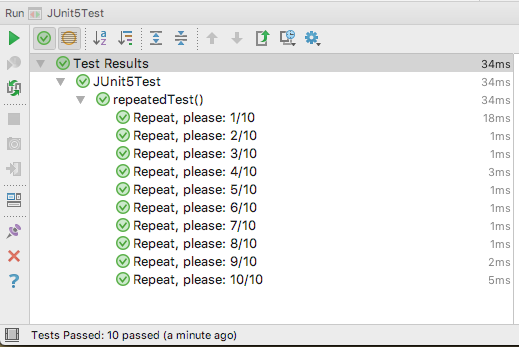
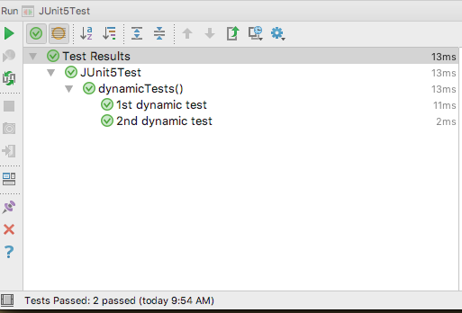
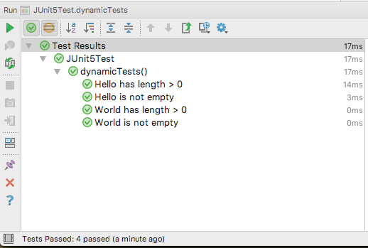
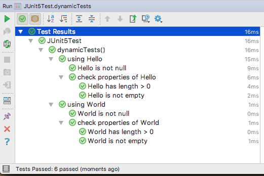

Novidades do JUnit 5 - parte 1
Publicado em:
@ljtfreitas
Em setembro/2017, após pouco mais de um ano de versões milestones e testes, foi lançado o JUnit 5, a nova versão do principal framework para testes de código na plataforma Java. Essa versão traz várias novas funcionalidades excelentes e algumas mudanças drásticas em relação às versões anteriores.
Este é o primeiro post de uma série sobre o JUnit 5. Aqui, vou tratar das principais mudanças e recursos nesse novo release. No próximo, vou comentar a respeito da migração e adaptação dos testes escritos com JUnit 3⁄4.
Arquitetura
O JUnit foi repensado como uma plataforma para construção e execução de testes, de modo que o JUnit 5 é composto por diversos módulos com papéis diferentes (ao invés de “um único framework”):
JUnit 5 = JUnit Platform + JUnit Jupiter + JUnit Vintage
JUnit Platform: É o responsável pela descoberta e execução de testes na JVM, definindo a relação entre os testes e plataforma de execução (IDEs, console, ferramentas de build). Esse módulo também expõe a interface TestEngine, que define o contrato de execução de qualquer ferramenta de testes sobre a plataforma do JUnit.
JUnit Jupiter: Este módulo contém os novos recursos para construção de testes usando o JUnit, e fornece uma implementação de
TestEnginepara execução dos testes escritos com o JUnit Jupiter. Vamos explorar esse módulo com mais detalhes :)JUnit Vintage: Fornece um
TestEnginepara execução de testes escritos em JUnit 3 e 4.
A versão 8 do Java é a mínima requerida para o JUnit 5.
Suporte para IDEs
O suporte nas IDEs ainda está um pouco incipiente. As versões mais recentes do IntelliJ suportam o JUnit 5 (a partir da versão 2016.2; no momento da escrita desse post, a última versão é a 2017.2), mas carregam os jars das versões anteriores (milestones) à versão estável. No Eclipse, a versão 4.7 (Oxygen; a versão mais recente, no momento da escrita desse post) depende da instalação deste plugin, e a próxima versão (Photon) trará o suporte integrado.
Dependências
Dadas as mudanças na arquitetura do JUnit, que anteriormente era um único jar, podemos começar adicionando a seguinte dependência no classpath de testes (os exemplos abaixo usam o pom.xml do Maven):
<dependency>
<groupId>org.junit.jupiter</groupId>
<artifactId>junit-jupiter-engine</artifactId>
<version>5.0.0</version>
<scope>test</scope>
</dependency>
A dependência acima irá carregar mais alguns artefatos, especialmente, junit-jupiter-engine e junit-platform-engine, necessários para execução na plataforma JUnit. Existem vários outros artefatos, que são descritos detalhadamente na documentação oficial. Vamos utilizar mais alguns deles no decorrer do post.
Por agora, temos tudo pronto para começarmos com o JUnit 5, então…ao código!
Show me the code!
No JUnit Jupiter, as principais classes e anotações que utilizaremos para escrever nossos testes estão sob o pacote org.junit.jupiter.api.
import org.junit.jupiter.api.Test;
import static org.junit.jupiter.api.Assertions.assertEquals;
public class JUnit5Test {
@Test
public void myFirstJUnit5Test() {
assertEquals(2, 1 + 1);
}
}
Para uma olhada inicial, repare no exemplo acima os imports dos novos pacotes. A anotação @Test continua sendo a referência para denotar um método como um method test. A classe Assert não existe mais, sendo substituída pela nova classe Assertions. Abaixo, vamos ver com mais detalhes essas e outras mudanças.
@Test
Como dito acima, a anotação @Test continua sendo a maneira de dizermos ao JUnit que um método específico representa um teste. No JUnit 4, essa anotação tinha dois parâmetros possíveis: timeout e expected; esses parâmetros foram removidos (testes de timeout e exceções agora são feitos de forma diferente, explicados mais adiante). A anotação @Test também pode ser utilizada como uma meta-anotação, caso você queira criar suas próprias annotations para expressar algum significado em particular:
import org.junit.jupiter.api.Test;
@Test
@Retention(RetentionPolicy.RUNTIME)
@Target(ElementType.METHOD)
public @interface IntegrationTest {
}
...
public class JUnit5Test {
@IntegrationTest
public void myIntegrationTest() {
...
}
}
@BeforeAll, @AfterAll, @BeforeEach, @AfterEach
As anotações @Before e @After foram substituídas por @BeforeEach e @AfterEach. De maneira análoga ao JUnit 4, o metódo anotado com @BeforeEach é executado antes de cada teste, e o método anotado com @AfterEach, após cada teste.
Do mesmo modo, as anotações @BeforeClass e @AfterClass foram substituídas por @BeforeAll e @AfterAll. O método anotado com @BeforeAll é executado antes de todos os testes, e o método com @AfterAll, após todos os testes. Novamente, de maneira análoga ao JUnit 4, os métodos com essas anotações devem ser estáticos (ou o JUnit irá lançar uma exceção). A não ser que…você utilize a nova anotação @TestInstance, explicada abaixo.
@TestInstance
O comportamento padrão do JUnit é executar cada teste em uma nova instância da classe, devido ao princípio do isolamento, para que a execução de um teste não interfira em outro. O JUnit sempre se comportou dessa forma e isso continua na versão 5, e é por esse motivo que os métodos anotados com @BeforeAll ou @AfterAll devem ser estáticos (podem ser executados antes/após todos os testes, sem a necessidade de uma instância da classe).
MAS, se por algum motivo você queira alterar esse comportamento, você pode customizar o lifecycle da classe de testes, usando a nova anotação @TestInstance:
@TestInstance(TestInstance.Lifecycle.PER_METHOD)
public class JUnit5Test {
@Test
public void myFirstJUnit5Test() {
assertEquals(2, 1 + 1);
}
}
Essa anotação tem um parâmetro do tipo TestInstance.Lifecycle, que é um enum com dois valores possíveis: PER_METHOD (o padrão: uma instância da classe para cada método de teste) e PER_CLASS (uma instância apenas por classe de teste, utilizada para todos os métodos).
Sobre as anotações @BeforeAll e @AfterAll, ao utilizar o lifecycle PER_CLASS, os métodos com essas anotações não podem ser estáticos. A documentação da anotação comenta a respeito de alguns casos de uso válidos para a utilização do PER_CLASS.
@DisplayName
Você pode utilizar essa anotação para fornecer uma descrição mais clara a respeito do que o teste faz. Esse nome será exibido no relatório de saída do JUnit:
@DisplayName("Testes com JUnit 5 😀")
public class JUnit5Test {
@Test
@DisplayName("o resultado de 1 + 1 deve ser 2")
public void myFirstJUnit5Test() {
assertEquals(2, 1 + 1);
}
}
A saída do JUnit (no meu caso, no IntelliJ):

Imagino que não deixaram de reparar no 😀, tanto no código quanto no relatório de saída do teste. Bizarramente, isso sempre foi suportado no JUnit (!). Como a própria documentação incluiu um exemplo, aparentemente os emojis estão oficialmente liberados!
Assertions
A classe Assert, a classe mais utilizada para escrita de testes com o JUnit, foi substituída pela nova classe Assertions, que tem o mesmo propósito: fornecer os métodos assert, utilizados para validar as condições que determinam se um teste passou ou não. Os métodos das versões anteriores continuam existindo (assertEquals/notEquals, assertSame/notSame, assertTrue/False, fail, etc), com uma diferença: esses métodos eram (e continuam sendo) sobrecarregados para permitir ao usuário informar uma mensagem explicativa para o caso do teste falhar. Nas versões anteriores, esse argumento (do tipo String) era o primeiro parâmetro do método, e, no JUnit 5, passa a ser o último.
public class JUnit5Test {
@Test
public void myFirstJUnit5Test() {
// antes -> assertEquals("o resultado esperado desse teste é 2...a soma está correta?", 2, 5 + 3);
//agora
assertEquals(2, 5 + 3, "o resultado esperado desse teste é 2...a soma está correta?");
}
}
Também é possível informar um Supplier
Um novo método muito útil é o assertAll, que permite executar um conjunto de testes para serem validados em conjunto:
@Test
public void myFirstJUnit5Test() {
Person person = new Person();
person.name = "Tiago";
person.age = 32;
assertAll(
() -> assertEquals("Tiago de Freitas Lima", person.name), //falha
() -> assertEquals(20, person.age) //falha (queria que não falhasse)
);
}
private class Person {
String name;
int age;
}
A saída do JUnit:
org.opentest4j.MultipleFailuresError: Multiple Failures (2 failures)
expected: <Tiago de Freitas Lima> but was: <Tiago>
expected: <20> but was: <32>
No exemplo acima, enviamos para o método assertAll duas expressões lambda do tipo Executable, que é um novo objeto do JUnit para representar um bloco de código (Executable é uma interface funcional). O teste irá quebrar, e o relatório exibirá cada falha de maneira individual. O teste passará apenas quando todos os testes enviados para o assertAll passarem. Uma observação: como o parâmetro desse método é um varargs do tipo Executable (há uma sobrecarga que recebe um Stream), o parâmetro que representa a mensagem a ser exibida em caso de falha é o primeiro argumento (sim, é uma exceção ao que escrevi no parágrafo anterior…).
@Test
public void myFirstJUnit5Test() {
Person person = new Person();
person.name = "Tiago";
person.age = 32;
assertAll("Há algo errado com essa pessoa..."
() -> assertEquals("Tiago de Freitas Lima", person.name), //falha
() -> assertEquals(20, person.age) //falha
);
}
Outro novo método é o assertThrows, para testes de código que lançam exceções (no JUnit 4, usaríamos o parâmetro expected da anotação @Test):
@Test
public void myFirstJUnit5Test() {
assertThrows(IllegalArgumentException.class,
() -> {throw new IllegalArgumentException("argumento invalido!");});
}
O primeiro parâmetro é o tipo da exceção esperada, e o segundo é um Executable. Se a execução do bloco não lançar a exceção esperada, o teste irá falhar.
@Test
public void myFirstJUnit5Test() {
assertThrows(IllegalArgumentException.class,
() -> {});
}
//falha
//org.opentest4j.AssertionFailedError: Expected java.lang.IllegalArgumentException to be thrown, but nothing was thrown.
@Test
public void myFirstJUnit5Test() {
assertThrows(IllegalArgumentException.class,
() -> {throw new RuntimeException("uma excecao qualquer");});
}
//falha
//Unexpected exception type thrown ==> expected: <java.lang.IllegalArgumentException> but was: <java.lang.RuntimeException>
Eventualmente, você pode querer capturar a exceção lançada para implementar alguma validação, como verificar se a mensagem está correta ou se alguma informação adicional que seu código deve incluir na exceção está mesmo sendo enviada. No JUnit 4, poderíamos usar a classe ExpectedException para esse propósito, mas no JUnit 5 o método assertThrows é o suficiente para atender essa necessidade:
@Test
public void myFirstJUnit5Test() {
//assrtThrows retorna a exceção lançada
IllegalArgumentException exception = assertThrows(IllegalArgumentException.class,
() -> {throw new IllegalArgumentException("argumento invalido!");});
assertEquals("argumento invalido!", exception.getMessage());
}
Outra necessidade que pode ocorrer durante a escrita de testes é a verificação de timeouts. No JUnit 4, duas maneiras possíveis de fazer isso eram utilizar o parâmetro timeout da anotação @Test, ou a classe Timeout. Essas duas abordagem compartilhavam do seguinte problema: o JUnit iniciava a medição do tempo de execução a partir do início do método do teste, quando na verdade a intenção do programador é verificar o timeout apenas do código a ser testado. Uma maneira mais elegante de atender esse caso de uso é o método assertTimeout:
@Test
public void myFirstJUnit5Test() {
assertTimeout(Duration.ofMillis(1000), () -> Thread.sleep(2000));
}
O primeiro argumento é um objeto do tipo Duration, que é uma classe introduzida no Java 8 que representa uma “quantidade de tempo”, no exemplo, 1000 milissegundos (essa classe tem vários métodos de criação). O segundo parâmetro é um Executable; no exemplo, a execução do bloco está durando 2000 milissegundos, estourando o timeout que informamos. O teste irá falhar com a seguinte mensagem:
org.opentest4j.AssertionFailedError: execution exceeded timeout of 1000 ms by 1003 ms
O relatório exibe a diferença entre o tempo total da execução e o timeout esperado. Mas como o JUnit sabe o tempo total? A resposta é que a execução aguardou o bloco terminar, porque o Executable foi executado na mesma thread do teste. Isso é útil, mas nem sempre é o desejado. Afinal, suponha um cenário onde o seu timeout é, digamos, 2 segundos; se o código demorar 3 segundos ou uma hora, o fato é que o timeout esperado foi excedido e não é necessário esperar até o fim da execução para “descobrirmos” o problema. Para isso, existe o método assertTimeoutPreemptively:
@Test
public void myFirstJUnit5Test() {
assertTimeoutPreemptively(Duration.ofMillis(1000), () -> Thread.sleep(2000));
}
O método assertTimeoutPreemptively executa o bloco em outra thread, de modo que a execução é imediatamente interrompida caso o timeout seja excedido. No exemplo acima, o teste falha com a mensagem:
org.opentest4j.AssertionFailedError: execution timed out after 1000 ms
Outra situação que pode ocorrer é você querer obter o retorno do método que está sendo executado no assertTimeout/Preemptively, para realizar alguma validação. Isso é perfeitamente possível:
@Test
public void myFirstJUnit5Test() {
Person person = new Person();
person.name = "Tiago";
person.age = 32;
String message = assertTimeout(Duration.ofMillis(2000), person::message);
assertEquals("Hello Tiago, your age is 32", message);
}
class Person {
String name;
int age;
String message() throws Exception {
Thread.sleep(1000);
return "Hello " + name + ", your age is " + age;
}
}
Uma observação: o segundo parâmetro dos métodos assertTimeout/Preemptively é um objeto do tipo ThrowingSupplier, que representa um bloco de código que devolve algum valor qualquer e pode lançar uma exceção.
Outras utilidades:
* os métodos assertTrue e assertFalse também passam a aceitar argumentos do tipo BooleanSupplier
* método para comparação de objetos do tipo Iterable, como coleções: assertIterableEquals
* método para comparação de duas listas do tipo String (?): assertLinesMatch
* lista completa de métodos: Assertions, e exemplos mais elaborados na documentação.
E, claro, o exemplo que não poderia faltar :):
@Test
public void myFirstJUnit5Test() {
assertEquals("😀", "🤔");
}
//falha
org.opentest4j.AssertionFailedError:
Expected :😀
Actual :🤔
Assumptions
Um recurso muito útil mas não muito utilizado é a API de Assumptions do JUnit, representada pela classe Assume (introduzida no JUnit 4). Essa API permite você tornar o seu teste mais defensivo, no sentido que você pode verificar condições que serão “assumidas” na execução do teste, como, digamos, alguma variável de ambiente, um timezone específico, e outras condições externas que o seu código irá “assumir” como verdadeiras. Se alguma dessas pré-condições falhar (digamos, uma determinada variável de ambiente não está definida com um valor em particular), o teste será ignorado pelo JUnit, ao invés de falhar.
Esse recurso continua disponível no JUnit 5, agora na classe Assumptions:
import static org.junit.jupiter.api.Assumptions.assumeTrue;
public class JUnit5Test {
@Test
public void myFirstJUnit5Test() {
assumeTrue("CI".equals(System.getProperty("ENV"))); //teste executado apenas no ambiente CI
...
}
}
Lembrando que no caso da condição acima não ser verdadeira, o teste será ignorado:
org.opentest4j.TestAbortedException: Assumption failed: assumption is not true
Tags
O JUnit 4 possui a anotação @Category, que permite associar um teste com uma determinada “categoria” de testes, que posteriormente podem ser agrupados em uma suite. Como exemplo, você poderia categorizar todos os seus testes “lentos” (que acessam bancos de dados ou recursos externos), agrupá-los e executá-los apenas em um momento específico do build da aplicação. O uso dessa anotação era um pouco complicado porque era necessário criar uma interface vazia para representar a “categoria”. O JUnit 5 simplificou esse modelo, introduzindo a anotação @Tag:
@Tag("fast")
public class JUnit5Test {
@Test
@Tag("sample")
@Tag("basic") //pode ser repetida
public void myFirstJUnit5Test() {
}
}
Do mesmo que a anotação @Category da versão anterior, a anotação @Tag pode ser utilizada para filtros e agrupamento de testes.
Testes aninhados
Eventualmente, queremos testar uma classe que possui vários métodos, cuja execução depende do estado interno do objeto. Para alguns testes, precisamos inicializar esse objeto de determinado modo; em outros testes, a configuração deve ser diferente para que o uso de outro método seja possível. Podemos criar vários métodos na mesma classe de teste, o que pode tornar o entendimento um pouco confuso; outra abordagem possível seria criar testes separados e agrupá-los em uma suite. O fato é que esses testes fazem parte do mesmo contexto, que é o objeto sendo testado, e queremos que eles rodem em conjunto. O JUnit 5 introduziu uma maneira elegante de resolver esse cenário: a anotação @Nested.
public class StackTest {
private Stack<String> stack;
@Test
@DisplayName("is instantiated with new Stack()")
void isInstantiatedWithNew() {
new Stack<>();
}
@Nested
@DisplayName("when new")
class WhenNew {
@BeforeEach
void createNewStack() {
stack = new Stack<>();
}
@Test
@DisplayName("is empty")
void isEmpty() {
assertTrue(stack.isEmpty());
}
@Test
@DisplayName("throws EmptyStackException when popped")
void throwsExceptionWhenPopped() {
assertThrows(EmptyStackException.class, () -> stack.pop());
}
@Test
@DisplayName("throws EmptyStackException when peeked")
void throwsExceptionWhenPeeked() {
assertThrows(EmptyStackException.class, () -> stack.peek());
}
@Nested
@DisplayName("after pushing an element")
class AfterPushing {
String anElement = "an element";
@BeforeEach
void pushAnElement() {
stack.push(anElement);
}
@Test
@DisplayName("it is no longer empty")
void isNotEmpty() {
assertFalse(stack.isEmpty());
}
@Test
@DisplayName("returns the element when popped and is empty")
void returnElementWhenPopped() {
assertEquals(anElement, stack.pop());
assertTrue(stack.isEmpty());
}
@Test
@DisplayName("returns the element when peeked but remains not empty")
void returnElementWhenPeeked() {
assertEquals(anElement, stack.peek());
assertFalse(stack.isEmpty());
}
}
}
}
Extraí esse exemplo da documentação. No teste acima, testamos vários métodos da classe Stack (da API do Java), em várias situações diferentes, usando classes aninhadas. O interessante é que cada contexto de uso da classe é representado por um teste em particular, mas que fazem sentido quando executados de forma agrupada. Podemos fazer uso do @DisplayName (como no exemplo acima) para gerar uma saída como essa:

Testes parametrizados
Os testes parametrizados foram uma novidade introduzida no JUnit 4, que permitiam executar o mesmo conjunto de testes sobre argumentos diferentes. Esse recurso é muito útil, uma vez que, se quisermos testar o mesmo código com parâmetros diferentes, a alternativa seria criarmos outro teste (com os testes parametrizados, basta adicionar uma nova entrada de argumentos). Essa API foi completamente modificada no JUnit 5.
O suporte para testes parametrizados está em um módulo separado do core do JUnit Jupiter, de modo que precisamos adicionar a seguinte dependência:
<dependency>
<groupId>org.junit.jupiter</groupId>
<artifactId>junit-jupiter-params</artifactId>
<version>5.0.0</version>
<scope>test</scope>
</dependency>
No JUnit 4, o modelo de programação utilizado é criar um factory method estático que agrega os valores em um array bidimensional, e os parâmetros são injetados no construtor da classe de teste (um exemplo aqui). Na nova versão, podemos injetar os parâmetros diretamente no método:
import org.junit.jupiter.params.ParameterizedTest;
import org.junit.jupiter.params.provider.ValueSource;
public class JUnit5Test {
@ParameterizedTest
@ValueSource(strings = { "Hello", "World" }) // lista de parâmetros
public void parameterizedTest(String argument) {
assertNotNull(argument); //esse teste será executado uma vez para cada argumento: "Hello" e "World"
}
}
Para um teste parametrizado, devemos utilizar a anotação ParameterizedTest, ao invés de @Test. A anotação ValueSource funciona como um parameter provider, fornecendo os valores que serão injetados via argumento do método. Essa anotação possui outros parâmetros possíveis, para valores de outros tipos como ints, doubles e longs.
A saída padrão do teste fornece um feedback bem útil a respeito de cada execução:

Também podemos customizar o relatório, se desejarmos:
@ParameterizedTest(name = "Parameterized test {index}: {0}")
@ValueSource(strings = { "Hello", "World" })
public void parameterizedTest(String argument) {
assertNotNull(argument);
}

Outra possibilidade para injeção de parâmetros é a anotação EnumSource:
import org.junit.jupiter.params.provider.EnumSource;
public class JUnit5Test {
@ParameterizedTest(name = "Parameterized test {index}: {0}")
@EnumSource(TimeUnit.class)
public void parameterizedTest(TimeUnit timeUnit) {
assertNotNull(timeUnit); //o teste será executado para cada elemento do enum
}
}
No exemplo, utilizei o enum TimeUnit, da API padrão do Java 8. A anotação @EnumSource irá utilizar o enum como fonte dos parâmetros, rodando o teste para cada elemento do enum. Outra possibilidade dessa anotação é incluir/excluir seletivamente os items do enum a partir do nome.
Uma terceira maneira é fornecer um método gerador de parâmetros:
import org.junit.jupiter.params.provider.MethodSource;
public class JUnit5Test {
@ParameterizedTest
@MethodSource("parameterFactory") //metodo gerador de parâmetros
public void parameterizedTest(String argument) {
assertNotNull(argument);
}
static Collection<String> parameterFactory() {
return Arrays.asList("Hello", "World");
}
}
A anotação MethodSource permite fornecer um array de nomes de métodos que funcionarão como fábrica de parâmetros para o teste; os tipos de retorno possíveis são Stream, Iterator ou Iterable (por exemplo, uma coleção ou array de valores). O método de fábrica deve ser estático, a não ser que a classe esteja anotada com @TestInstance(Lifecycle.PER_CLASS).
E se quisermos vários argumentos? Podemos fornecer uma coleção do objeto Arguments, que representa um array de argumentos:
import org.junit.jupiter.params.provider.Arguments;
public class JUnit5Test {
@ParameterizedTest
@MethodSource("parameterFactory")
public void parameterizedTest(String argument, int count) {
assertNotNull(argument);
assertTrue(count > 0);
}
static Collection<Arguments> parameterFactory() {
return Arrays.asList(Arguments.of("Hello", 1), Arguments.of("World", 1));
}
}
Outra possibilidade é fornecer argumentos no formato csv (valores separados por vírgula), usando a anotação CsvSource:
import org.junit.jupiter.params.provider.CsvSource;
public class JUnit5Test {
@ParameterizedTest
@CsvSource({ "Hello, 1", "World, 2"}) //o separador padrão é ",". É possível customizar usando o argumento "delimiter"
public void parameterizedTest(String argument, int count) {
assertNotNull(argument);
assertTrue(count > 0);
}
}
Ou em um arquivo csv externo, usando a anotação CsvFileSource:
import org.junit.jupiter.params.provider.CsvFileSource;
public class JUnit5Test {
@ParameterizedTest
@CsvFileSource(resources = "/parameters.csv") //deve estar no classpath de testes
public void parameterizedTest(String argument, int count) {
assertNotNull(argument);
assertTrue(count > 0);
}
}
O arquivo parameters.csv (o parâmetro resources é um array, permitindo que vários arquivos possam ser utilizados para o mesmo teste):
Hello, 1
World, 2
Ufa! Quantas opções…E se ainda assim você não estiver satisfeito ou precisar de algo mais específico, você ainda pode criar o seu próprio ArgumentsProvider!
import org.junit.jupiter.params.provider.ArgumentsSource;
import org.junit.jupiter.params.provider.ArgumentsProvider;
public class JUnit5Test {
@ParameterizedTest
@ArgumentsSource(CustomArgumentProvider.class)
public void parameterizedTest(String argument, int count) {
assertNotNull(argument);
assertTrue(count > 0);
}
static class CustomArgumentProvider implements ArgumentsProvider {
@Override
public Stream<? extends Arguments> provideArguments(ExtensionContext context) throws Exception {
// aqui você poderia implementar a leitura de qualquer fonte de dados para o seu teste,
// como um arquivo texto, planilha, etc
return Stream.of(Arguments.of("Hello", 1), Arguments.of("World", 1));
}
}
}
No exemplo acima, criamos uma classe que implementa ArgumentsProvider e referenciamos no teste usando a anotação ArgumentsSource. Uma implementação mais complexa poderia ser encapsulada em uma meta-anotação reutilizável:
import org.junit.jupiter.params.provider.ArgumentsProvider;
import org.junit.jupiter.params.provider.ArgumentsSource;
import org.junit.jupiter.params.support.AnnotationConsumer;
public class JUnit5Test {
@ParameterizedTest
@ExcelSource(file = "test.xls")
public void parameterizedTest(String argument) {
assertNotNull(argument);
}
@ArgumentsSource(ExcelArgumentProvider.class)
public @interface ExcelSource {
String file(); // nome do arquivo
}
static class ExcelArgumentProvider implements ArgumentsProvider, AnnotationConsumer<ExcelSource> {
private String fileName;
@Override
public void accept(ExcelSource excelSource) {
this.fileName = excelSource.file(); //obtem os parâmetros da anotação
}
@Override
public Stream<? extends Arguments> provideArguments(ExtensionContext context) throws Exception {
// implementa a leitura do arquivo excel...
return Stream.empty();
}
}
}
No exemplo mais elaborado acima, criamos uma anotação chamada ExcelSource para utilizarmos em testes que utilizam um arquivo Excel como fonte de dados. Nossa anotação precisa ser anotada com ArgumentsSource, referenciando a classe fornecedora de parâmetros (no exemplo, ExcelArgumentProvider). No provider, também implementamos a interface AnnotationConsumer, para termos acesso aos parâmetros da anotação customizada.
Mais exemplos e casos de uso de testes parametrizados podem ser encontrados na documentação.
Repetição de testes
Outro novo recurso do JUnit 5 é a anotação RepeatedTest, que permite a repetição de um determinado teste “n” vezes.
@RepeatedTest(10) //número de repetições
public void repeatedTest() {
//esse teste será executado 10 vezes
}

A anotação também possui um parâmetro name que podemos utilizar para customizar a saída do teste:
@RepeatedTest(value = 10, name = "Repeat, please: {currentRepetition}/{totalRepetitions}")
public void repeatedTest() {
assertNotNull("JUNIT 5");
}

Caso seja necessário, podemos injetar um parâmetro do tipo RepetitionInfo, um objeto que contém as informações da repetição atual:
@RepeatedTest(value = 2)
public void repeatedTest(RepetitionInfo repetitionInfo) {
fail("Repetição: " + repetitionInfo.getCurrentRepetition() + "/" + repetitionInfo.getTotalRepetitions());
}
//como quebrei o teste propositalmente, a saída de cada execução seria:
//org.opentest4j.AssertionFailedError: Repetição: 1/2
//org.opentest4j.AssertionFailedError: Repetição: 2/2
Embora a utilização dessa anotação possa soar estranha, há algumas aplicações muito válidas. Imagine uma implementação de geração de números aleatórios, que devem estar contidos dentro de um determinado intervalo, dado um valor de seed. Seria uma ótima abordagem testar esse código muitas vezes, para garantir que a geração randômica está funcionando dentro dos parâmetros esperados; poderíamos fazer isso com um loop, mas essa abordagem sobrecarrega o teste com uma lógica adicional que prejudica o entendimento. A anotação @RepeatedTest torna essa tarefa trivial.
Testes dinâmicos
Os method tests exemplificados acima, e que estamos acostumados a fazer, são testes “estáticos”, no sentido que não são diretamente influenciados por variáveis “externas” ao ambiente, e são compilados com a classe de teste. Os Assumptions e as várias formas de @ParameterizedTests fornecem uma maneira simples de construirmos testes verificando pré-condições e valores dinâmicos, mas sua expressividade têm algumas limitações.
De todo modo, no JUnit, na grande maioria dos casos, isso é mais que o suficiente: nosso teste é representado por um método cujo nome representa o que queremos testar; criamos uma entrada (estática ou dinâmica), exercitamos o código, e verificamos se a saída/pós-condições foram atendidas. No JUnit 5, há uma maneira de repensar um pouco esse modelo de criação de testes, tornando possível a construção do teste em tempo de execução: podemos decidir, em tempo de código, o que será será testado e como será testado. Essa nova abordagem são os testes dinâmicos.
import org.junit.jupiter.api.DynamicTest;
import org.junit.jupiter.api.TestFactory;
import static org.junit.jupiter.api.DynamicTest.dynamicTest;
public class JUnit5Test {
@TestFactory
public Collection<DynamicTest> dynamicTests() {
return Arrays.asList(
dynamicTest("1st dynamic test", () -> assertTrue(true)),
dynamicTest("2nd dynamic test", () -> assertEquals(2, 1 + 1))
);
}
}
Os testes dinâmicos são criados em um método anotado com TestFactory, que deve retornar uma coleção/array/stream de DynamicTests. Para criar uma instância desse tipo, utilizamos o método dynamicTest, informando o display name do teste e um Executable que representa o teste em si.
A execução do teste acima tem essa saída:

Como o teste é construído no código, podemos parâmetriza-lo facilmente usando os próprios recursos comuns do Java:
@TestFactory
public Stream<DynamicTest> dynamicTests() {
return Stream.of("Hello", "World")
.flatMap(input -> Stream.of(
dynamicTest(input + " has length > 0", () -> assertTrue(input.length() > 0)),
dynamicTest(input + " is not empty", () -> assertFalse(input.isEmpty()))
));
}
A saída do teste acima:

Também poderíamos, dinamicamente, organizar o teste acima de maneira equivalente ao que fizemos com os nested tests, usando as classes DynamicContainer e DynamicNode:
import org.junit.jupiter.api.DynamicNode;
import static org.junit.jupiter.api.DynamicContainer.dynamicContainer;
public class JUnit5Test {
@TestFactory
public Stream<DynamicNode> dynamicTests() {
return Stream.of("Hello", "World")
.map(input -> dynamicContainer("using " + input, Stream.of(
dynamicTest(input + " is not null", () -> assertNotNull(input)),
dynamicContainer("check properties of " + input, Stream.of(
dynamicTest(input + " has length > 0", () -> assertTrue(input.length() > 0)),
dynamicTest(input + " is not empty", () -> assertFalse(input.isEmpty()))
))
)));
}
}
O teste acima gera o seguinte relatório:

Mais exemplos na documentação.
Interfaces para testes
O JUnit 5 permite que que as anotações que vimos acima sejam incluídas em métodos default de interfaces. Isso abre algumas possibilidades interessantes; podemos criar interfaces que representem uma espécie de “template” de testes, e incluir essas interfaces na assinatura das classes de teste específicas. O exemplo abaixo consta na documentação, e demonstra o uso de uma interface para testar o contrato do método equals de objetos:
public interface Testable<T> {
T createValue();
}
public interface EqualsContract<T> extends Testable<T> {
T createNotEqualValue();
@Test
default void valueEqualsItself() {
T value = createValue();
assertEquals(value, value);
}
@Test
default void valueDoesNotEqualNull() {
T value = createValue();
assertFalse(value.equals(null));
}
@Test
default void valueDoesNotEqualDifferentValue() {
T value = createValue();
T differentValue = createNotEqualValue();
assertNotEquals(value, differentValue);
assertNotEquals(differentValue, value);
}
}
public class JUnit5Test implements EqualsContract<String> {
@Override
public String createValue() {
return "Hello";
}
@Override
public String createNotEqualValue() {
return "World";
}
}
Os asserts estão na interface EqualsContract, e a classe de teste simplesmente está fornecendo os valores que são utilizados nos testes (essencialmente, o exemplo acima é uma implementação com template method). Pra fins de simplicidade, o teste acima usa a classe String nos testes de igualdade, mas poderíamos usar a interface EqualsContract para testar a implementação do equals de qualquer outro objeto (bastaria criar outro teste alterando a assinatura: implements EqualsContract<QualquerTipo>).
Lembrando que nas versões anteriores do JUnit é possível implementar algo parecido usando herança (métodos de teste na superclasse, e testes específicos que extendem), porque os métodos de testes são herdados, o que continua ocorrendo no JUnit 5.
Conclusão
O JUnit 5 trouxe enormes mudanças em relação às versões anteriores, com novas funcionalidades excelentes e um inteligente modelo de extensão, que tornam ainda mais simples escrever testes de diversas formas para diferentes propósitos.
Nesse post, tentei abordar as principais novidades da nova versão. Talvez você tenha ficado com uma dúvida: “mas e todos os testes que já existem no meu projeto, escritos no JUnit 3⁄4?” Vamos falar disso no próximo post!
Obrigado e espero que tenha gostado! Em caso de dúvidas ou qualquer outra observação, sinta-se à vontade para usar a caixa de comentários!